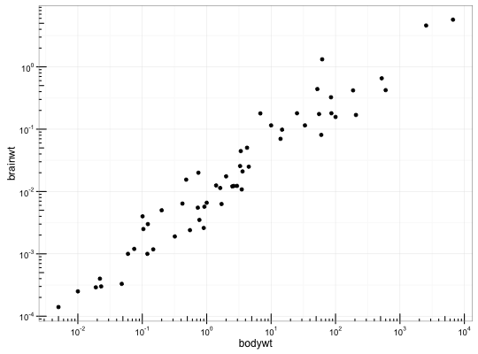
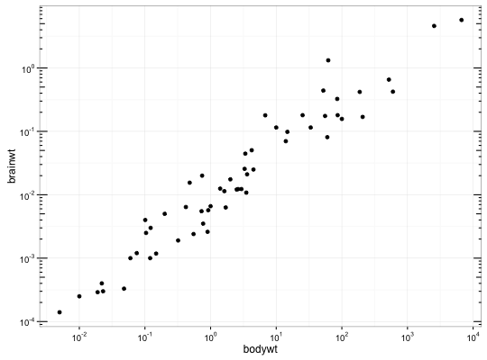

annotation_logticks(base = 10, sides = "bl", scaled = TRUE, short = unit(0.1, "cm"), mid = unit(0.2, "cm"), long = unit(0.3, "cm"), colour = "black", size = 0.5, linetype = 1, alpha = 1, color = NULL, ...)
"trbl", for top, right,
bottom, and left.TRUE
(default) when the data is already transformed with log10() or when
using scale_y_log10. It should be FALSE when using
coord_trans(y = "log10").unit object specifying the length of the
short tick marksunit object specifying the length of the
middle tick marks. In base 10, these are the "5" ticks.unit object specifying the length of the
long tick marks. In base 10, these are the "1" (or "10") ticks.solid, dashed, etc.)colour.This annotation adds log tick marks with diminishing spacing. These tick marks probably make sense only for base 10.
# Make a log-log plot (without log ticks) a <- ggplot(msleep, aes(bodywt, brainwt)) + geom_point(na.rm = TRUE) + scale_x_log10( breaks = scales::trans_breaks("log10", function(x) 10^x), labels = scales::trans_format("log10", scales::math_format(10^.x)) ) + scale_y_log10( breaks = scales::trans_breaks("log10", function(x) 10^x), labels = scales::trans_format("log10", scales::math_format(10^.x)) ) + theme_bw() a + annotation_logticks() # Default: log ticks on bottom and left
a + annotation_logticks(sides = "lr") # Log ticks for y, on left and right
a + annotation_logticks(sides = "trbl") # All four sidesError in grid.Call(L_textBounds, as.graphicsAnnot(x$label), x$x, x$y, : polygon edge not found# Hide the minor grid lines because they don't align with the ticks a + annotation_logticks(sides = "trbl") + theme(panel.grid.minor = element_blank())Error in grid.Call(L_textBounds, as.graphicsAnnot(x$label), x$x, x$y, : polygon edge not found# Another way to get the same results as 'a' above: log-transform the data before # plotting it. Also hide the minor grid lines. b <- ggplot(msleep, aes(log10(bodywt), log10(brainwt))) + geom_point(na.rm = TRUE) + scale_x_continuous(name = "body", labels = scales::math_format(10^.x)) + scale_y_continuous(name = "brain", labels = scales::math_format(10^.x)) + theme_bw() + theme(panel.grid.minor = element_blank()) b + annotation_logticks() # Using a coordinate transform requires scaled = FALSE t <- ggplot(msleep, aes(bodywt, brainwt)) + geom_point() + coord_trans(x = "log10", y = "log10") + theme_bw() t + annotation_logticks(scaled = FALSE)Warning message: Removed 27 rows containing missing values (geom_point).# Change the length of the ticks a + annotation_logticks( short = unit(.5,"mm"), mid = unit(3,"mm"), long = unit(4,"mm") )
scale_y_continuous, scale_y_log10 for log scale
transformations.
coord_trans for log coordinate transformations.